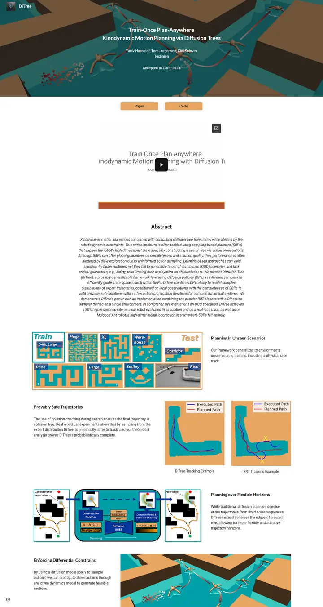
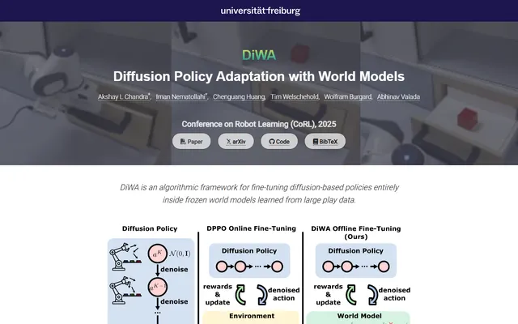
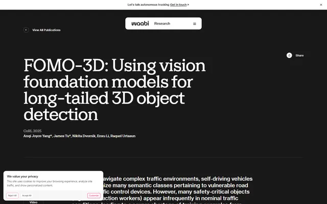
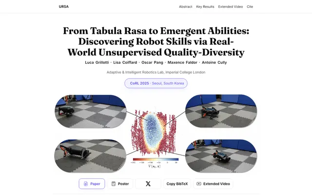
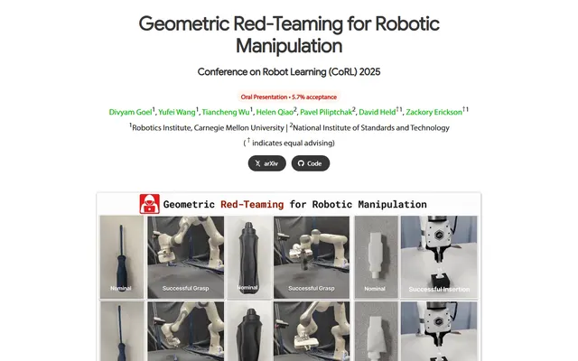
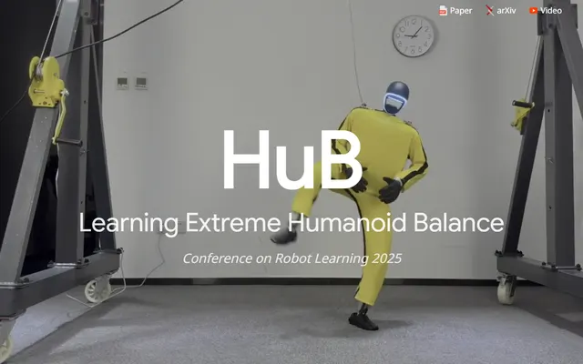
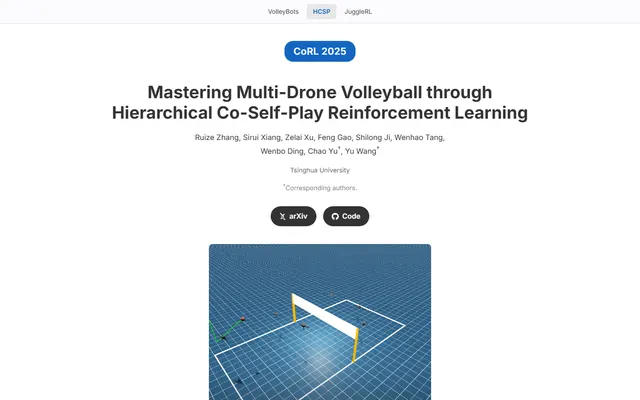

Train-Once Plan-Anywhere Kinodynamic Motion Planning via Diffusion Trees
上から見下ろした迷路。ティールの床と茶色の壁、レンダリングの上にそのまま置かれた白い文字、壁の色を借りた砂色のボタンが二つ。

表示されたページと照合済みです。
選んだ理由
レンダリング画像のヒーロー、ナビ内のブランドアイコン、図の配色に合わせたオレンジのボタン、テキストと図が交互に並ぶ行があります。ページ全体で色が一貫して使われています。埋め込まれたスライドプレビューが切れている点は減点です。
以下の説明と DESIGN.md 本文は英語です。コーディングエージェントが同じ一つの版を読めるよう、翻訳していません。
概要
カラーパレット
タイポグラフィ
Lato 700
Train-Once Plan-Anywhere Kinodynamic Motion Planning via Diffusion Tre
Abstract · Method · Results · BibTeX — 0123456789
Roboto 400
Train-Once Plan-Anywhere Kinodynamic Motion Planning via Diffusion Tre
Abstract · Method · Results · BibTeX — 0123456789
Roboto 400 italic
Train-Once Plan-Anywhere Kinodynamic Motion Planning via Diffusion Tre
Abstract · Method · Results · BibTeX — 0123456789
余白と形
ページの構成要素
ガイドライン
似たスタイル

DiWA: Diffusion Policy Adaptation with World Models
大学研究室の看板。ネイビーのワードマーク帯、白い文字の背後に煙るようなロボット動画、その後は落ち着いた白と淡いグレーの帯が、図の一枚一枚に専用の舞台を与える。

FOMO-3D: Using Vision Foundation Models for Long-Tailed 3D Object Detection
夜更けに読む研究室の年次報告書。チャコールの上に巨大な柔らかいセリフ体の見出し、ナビゲーション用に浮かぶ白いピル、角丸の枠に収まった図、そして最後はホットピンクの締めくくり。

From Tabula Rasa to Emergent Abilities: Discovering Robot Skills via Real-World Unsupervised Quality-Diversity
一本のバイオレットの糸が通った静かな誌面見開き。Fraunces の見出し、ライラックのピル、アウトラインのボタンがひとつだけ論文を指し示し、ほかはすべて白地に墨。

Geometric Red-Teaming for Robotic Manipulation
赤いスタンプがひとつ押された整った試験報告書。アプリコット色の "Oral Presentation" ピル、緑の著者名、そして正常な物体と壊れた双子を並べた額装の標本シート。

HuB: Learning Extreme Humanoid Balance
壁ほどの大きさの一語。ループするラボ映像の上に 192px の "HuB" をじかに刷り、隅に小さなリンクが三つ、ほかに張り合うものは何もない。

Mastering Multi-Drone Volleyball through Hierarchical Co-Self-Play Reinforcement Learning
コバルトで綴られた整った実験ノート。すりガラス風のプロジェクト切り替え、青いピル、そして細い罫線で区切られた青い見出しと、グレーのイタリックで添えられたキャプション。